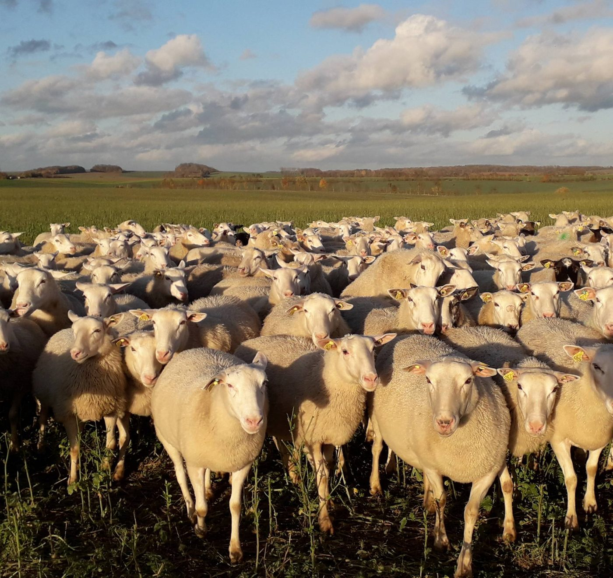
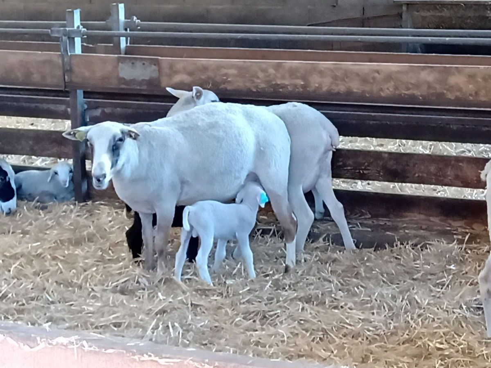
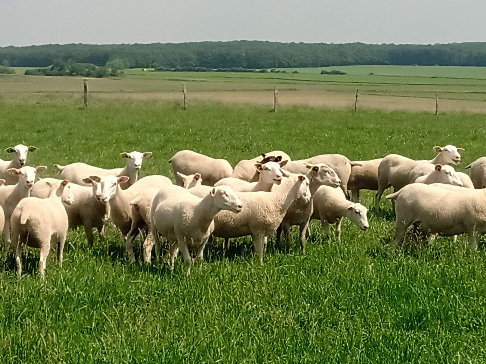

Site officiel de la race ovine
La brebis Romane
Productive, maternelle et rustique : une brebis qui s'adapte à tous les systèmes d'élevage. L'essayer, c'est l'adopter.

Que cherchez-vous ?
Découvrir la race
Son histoire, ses qualités, ses performances et la F1.
Voir →Acheter des reproducteurs
Agnelles, béliers, insémination, et la carte des éleveurs.
Voir →Conseils d'élevage
Lutte, agnelles, allaitement artificiel.
Voir →Documents à télécharger
Fiches, rapports d'activité, résultats et newsletters.
Voir →La sélection
Stations de contrôle, contrôle de performance, insémination.
Voir →Nous contacter
Une question ou un projet d'élevage : l'équipe vous répond.
Voir →Où trouver nos éleveurs ?
Cliquez sur la carte de France pour découvrir les éleveurs de brebis Romane près de chez vous.
Ouvrir la carte
L'OS Romane
Une coopérative d'éleveurs
L'OS Romane est l'organisme de sélection officiel de la race, agréé par le ministère de l'Agriculture. Géré par un conseil d'administration d'éleveurs, il tient le livre généalogique, définit la sélection et accompagne les éleveurs au quotidien.
